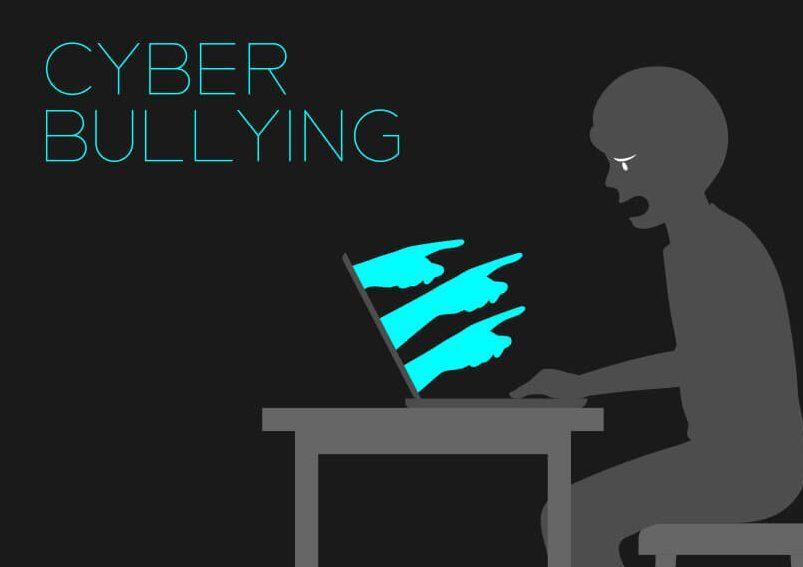
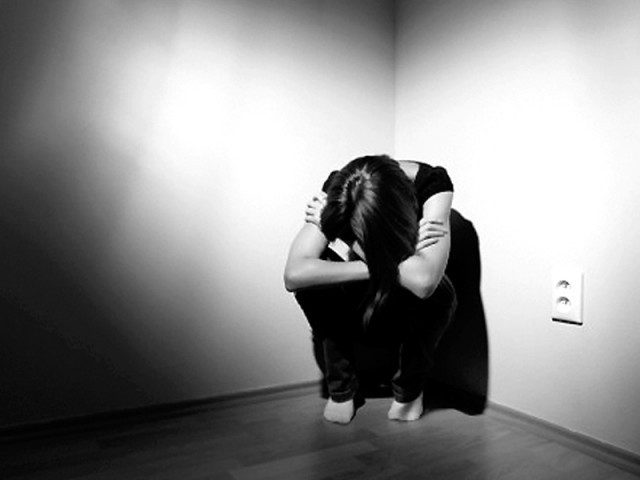
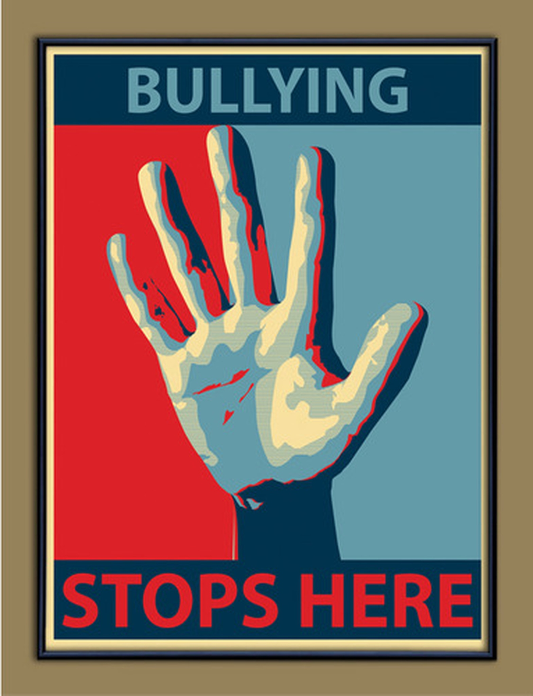
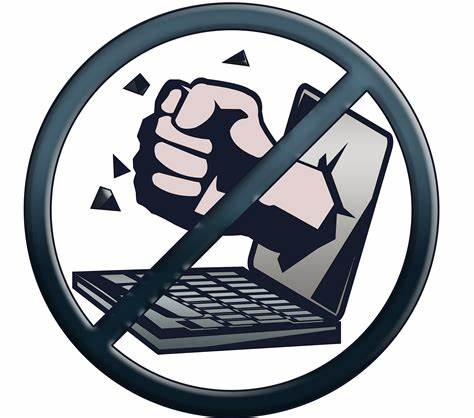
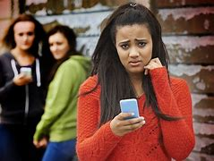

The Featured Article

Credits To the Rightful Owner of this Photo
What Is Cyber Bullying?
Cyber Bullying or cyberharassment is a form of bullying or harassment using electronic means. Cyberbullying and cyberharassment are also known as online bullying. It has become increasingly common, especially among teenagers, as the digital sphere has expanded and technology has advanced.
Source: https://en.wikipedia.org/wiki/Cyberbullying
How to Know If it Is Cyber Bullying?
(1) Cyberbullying occurs when someone, mostly a teenager, are bullying or harasses others on the internet because of their looks, race, social status and etc. that the bully might use against the victim/s, particularly on social media sites.
(2) Bullying will occur when the bully is/are posting rumors about the victim, threating the victim (e.g. blackmailing), sexual means, posting or telling the personal information of the victim, and also posting or commenting a hate speech to the socail media of the victim.
(3) It is Bullying or harassment if the bully is repeating it's harmful actions towards the victim.
What Is The Mental and behavioural effects of cyber bullying to the victim?

Credits to the Rightful Owner
According to North American Investigations the effects of cyber bullying are the following:
(1) Cyber Bullying can increase the "Emotional Distress" which can give the victim/s an extreme sadness, anger and frustration.
(2) It can "Lower Their Self-esteem" because they will start to think that they are being disliked by the society and might not try to talk to toher people around and will not try to approach someone or having a hard time to find a trusted friend.
(3) The Victims might "Isolate theirselves" and spend more time being alone, even their family members might be a stranger for the victims. Also they will start to think that everybody will only hurt their feelings if they will get along with them.
(4) Lastly, the victims will start to "Indulge Harmful Habits" such as alcohol, cigarette and the worst is drugs. The Victims might be start to thinking that that is their way to escape the harsh reality for them but the truth is, it is not because it only makes them more stressed thinking about their life/lives.
This are the psychological effects of Cyber Bullying, It is harsh right?. Additionally, they may try to take their own lives if they can't take it anymore and but is they are niot they are living in a paranoid life trying to not to get along with the society.
How To Stop Cyber Bullying? Especially for Kids?

Credits to the Rightful Owner
EDUCATE YOURSELF
Educate yourself about different types of cyberbullying and learn about all the social media platforms your children use.
COMMUNICATE
Be patient and talk to your children what cyberbullying is, whether he/she knows someone is being bullied, and what to do when they are experiencing online bullying.
MONITOR ONLINE ACTIVITIES
You can use iKeyMonitor to monitor your children’s online activities to detect signs of cyberbullying. You can notice it and save the evidence.
BUILD A POSITIVE CLIMATE
You can create a group chat or forum where parents can discuss issues related to cyberbullying.
source: https://www.connectsafely.org/tips-to-help-stop-cyberbullying/

Hi I'm Christian Jomari Gallo a normal student who wants to stop the madness of cyber bullying to the cyber world.Please Kindly Support Me If You Want My BLog
Follow Me To Stay Updated!
Parents Or Adults are Responsible for checking their child/children's online actibity on social media platforms because they are easily to be targeted by the cyberbullies. TIPS TO PREVENT CYBERBULLYING
(1) Encourage teenagers to appropriately limit what they post online.
(2) Victims of cyberbullying should change their online accounts in order to prevent further harassment.
(3) Parents and other adults responsible for the safety of teenagers should get involved by appropriate monitoring of online activities. (4) Teaching appropriate online behaviors to teens is also important.

CYBERBULLYING
Approximately 34% of students report experiencing cyberbullying during their lifetime (Hinduja & Patchin, 2015)
Over 60% of students who experience cyberbullying reported that it immensely impacted their ability to learn and feel safe while at school (Hinduja, 2018)
59% of U.S. teens have been bullied or harassed online, and over 90% believe it's a major problem for people their age (Pew Research Center, 2018)